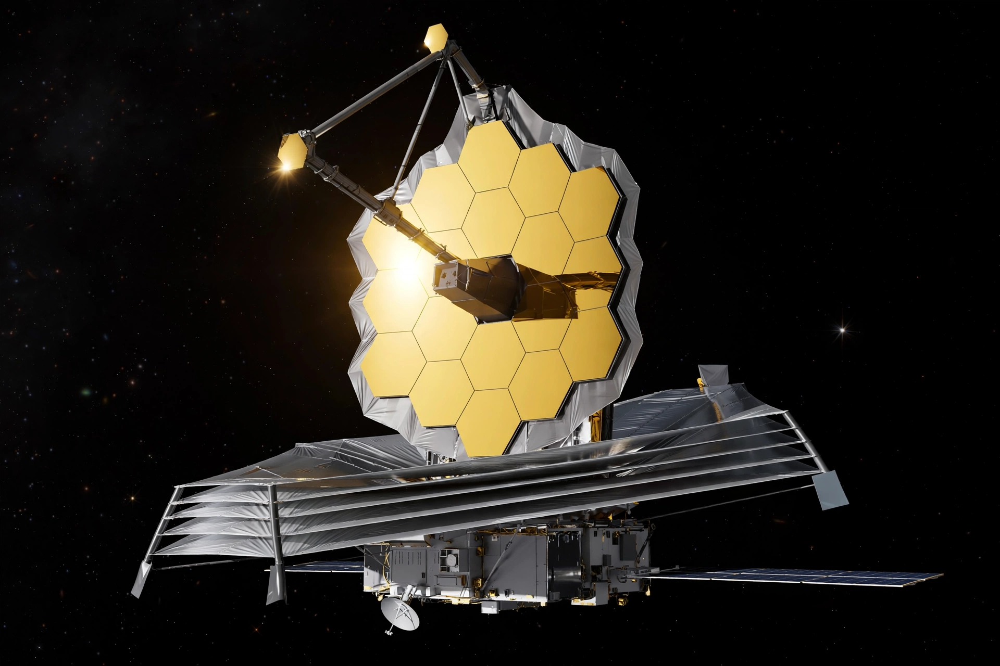

James Webb Space Telescope

[Image: The James Webb Space Telescope with its gold-coated segmented primary mirror and silver sunshield, against black space]
The James Webb Space Telescope (Webb) is the largest, most powerful and most complex space telescope ever built. Launched on 25 December 2021 on an Ariane 5 rocket from French Guiana, Webb orbits the Sun about 1.5 million kilometres from Earth, around the Sun–Earth L2 point, observing the universe in infrared light from behind a tennis-court-sized, five-layer sunshield.
First light, first images
Webb's first full-colour images and spectra were released on 12 July 2022, including a deep field showing thousands of galaxies in a patch of sky the size of a grain of sand held at arm's length, the Carina and Southern Ring nebulae, Stephan's Quintet, and the spectrum of exoplanet WASP-96 b.
Science goals
Webb was built to see the first stars and galaxies that formed after the Big Bang, watch stars and planetary systems being born inside dust clouds it can see through, measure the atmospheres of exoplanets, and investigate the Solar System's planets and small bodies. Its 6.5-metre primary mirror is made of 18 gold-coated beryllium segments.
Facts
- Launch: 25 December 2021
- Orbit: Sun–Earth Lagrange point 2 (L2) halo orbit
- Primary mirror: 6.5 m, 18 segments, gold-coated beryllium
- Instruments: NIRCam, NIRSpec, MIRI, FGS/NIRISS
- Partners: NASA, ESA, Canadian Space Agency
A recreation from memory of NASA's Webb mission page. See also ESA and Hubble.